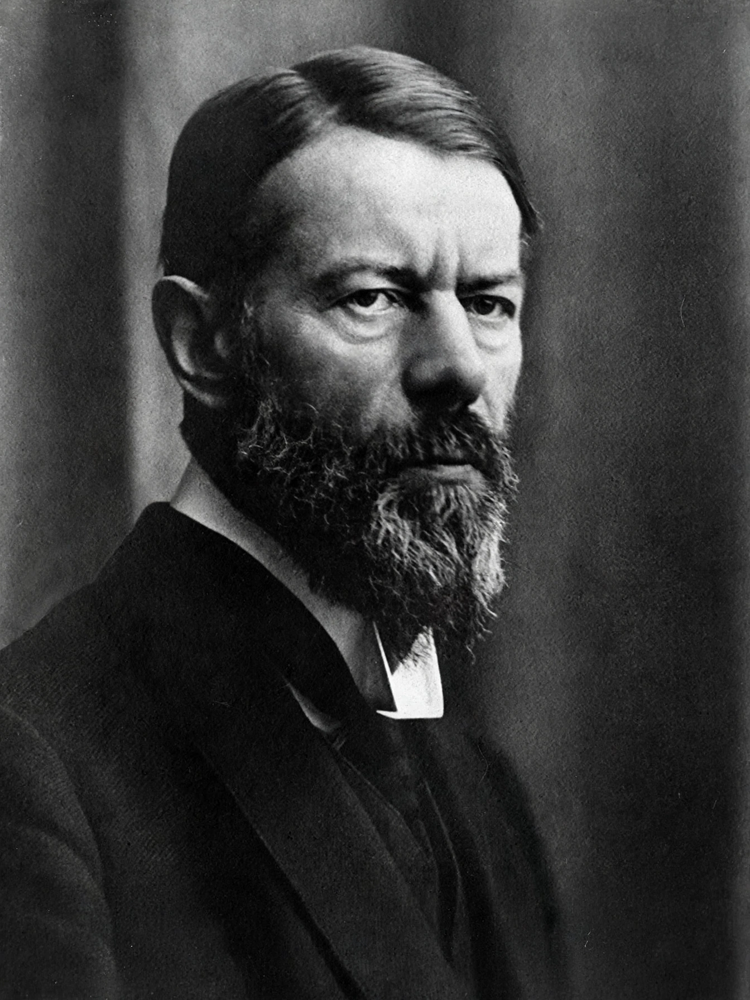

Max Weber
From Wikipedia, the free encyclopedia
Maximilian Karl Emil Weber (21 April 1864 – 14 June 1920) was a German sociologist, historian, jurist and political economist, regarded with Marx and Durkheim as a founder of modern sociology. His The Protestant Ethic and the Spirit of Capitalism (1904–05) argued that ascetic Protestantism — especially the Calvinist doctrine of the calling and anxiety over predestination — unintentionally fostered the methodical, acquisitive ethos of modern capitalism; the thesis remains debated but permanently shaped the sociology of religion and economic history.

Max Weber (1864–1920), German sociologist.
Weber's posthumous Economy and Society (1922) systematised his sociology: the three types of legitimate authority (traditional, charismatic and rational-legal); bureaucracy as the technically superior but freedom-threatening form of administration (the “iron cage” of rationalisation); the methodology of Verstehen (interpretive understanding) and ideal types; and the analysis of status, class and party as distinct dimensions of stratification. His 1919 lectures “Science as a Vocation” and “Politics as a Vocation” — with their distinction between the ethics of conviction and of responsibility — remain canonical. He advised the German delegation at Versailles and influenced the Weimar constitution's presidency.
See also
See also
Bureaucracy · Charismatic leadership · Legitimacy (political)